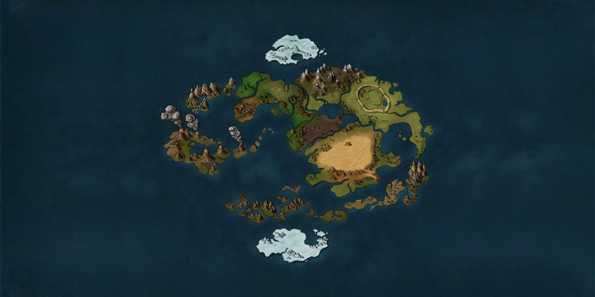

Mapa do Mundo Avatar
Tribo da Água
As Tribos da Água estão localizadas nas extremidades do planeta, nos polos Norte e Sul, rodeadas por vastas extensões de gelo e mar aberto. O ambiente é dominado por geleiras, montanhas cobertas de neve e extensos campos congelados, onde as vilas são construídas a partir do próprio gelo. Há também uma pequena comunidade no Pântano Nebuloso, dentro do Reino da Terra, que vive em harmonia com as águas e a vegetação densa da região.
O clima nas tribos polares é rigoroso e constantemente frio. O inverno se estende por praticamente todo o ano, com longos períodos de escuridão e poucas horas de luz solar. A temperatura raramente sobe acima do ponto de congelamento, e as nevascas são frequentes. Mesmo assim, o oceano circundante é fonte de vida, sustentando as comunidades que aprenderam a sobreviver e prosperar em meio ao gelo.
Além das tribos polares, existe o Pântano Nebuloso, uma região úmida e quente dentro do Reino da Terra, onde uma pequena comunidade de dobradores vive em harmonia com as águas e as plantas. Embora contrastem em ambiente, tanto o gelo quanto o pântano refletem a mesma conexão com o ciclo e a fluidez da água.
Nômades do Ar
Os Nômades do Ar habitam quatro templos localizados nos extremos do mundo — um em cada ponto cardeal. Muitos desses templos foram construídos sobre montanhas altíssimas, falésias e ilhas isoladas, envoltas por nuvens e ventos constantes. Essa geografia elevada proporciona isolamento e serenidade, refletindo a busca dos nômades por equilíbrio espiritual e desapego material. O clima nos templos do Ar é predominantemente frio, devido à altitude. As temperaturas caem drasticamente à noite, e neves ocasionais são comuns nas regiões mais elevadas. Durante o dia, o vento sopra forte e constante, mantendo o ar rarefeito e puro. Essa atmosfera leve e silenciosa favorecia a meditação e a harmonia com o ambiente, princípios centrais da cultura dos Nômades do Ar.
Nação do Fogo
A Nação do Fogo é um extenso arquipélago formado por ilhas vulcânicas, muitas delas ainda ativas. Seu território é composto por montanhas escuras, planícies cobertas de cinzas e solos extremamente férteis, enriquecidos pela atividade vulcânica constante. A capital está localizada dentro da cratera de um enorme vulcão, símbolo da energia e da força que definem o país. O clima é predominantemente quente e úmido, típico de regiões tropicais. As temperaturas elevadas são constantes ao longo do ano, e as chuvas ocorrem de forma irregular, concentradas em breves períodos. Em algumas áreas interiores, o calor é tão intenso que a vegetação é mais escassa, dando lugar a campos secos e rochosos. Essa combinação de calor e poder natural influenciou o modo de vida dos habitantes, que aprenderam a canalizar a energia do fogo e dos vulcões para o progresso, a disciplina e a arte da dobra.
Reino da Terra
O Reino da Terra é o maior território do mundo e apresenta uma impressionante variedade geográfica. Suas paisagens vão desde as férteis planícies e vales do interior até as montanhas íngremes que cercam cidades como Omashu. O imenso deserto de Si Wong ocupa boa parte do sudeste, enquanto florestas e regiões úmidas se espalham pelo oeste e pelas áreas costeiras. Essa diversidade faz com que cada região tenha características únicas — desde pântanos isolados até campos verdejantes e cadeias de montanhas cobertas de névoa. O clima é igualmente diverso: nas áreas centrais e desérticas, o ar é quente e seco, com chuvas raras; nas zonas costeiras e férteis, predominam temperaturas amenas e chuvas regulares; e nas montanhas, o frio é constante, especialmente durante o inverno. Essa variedade de ambientes moldou um povo adaptável e resiliente, profundamente conectado à terra em todas as suas formas.